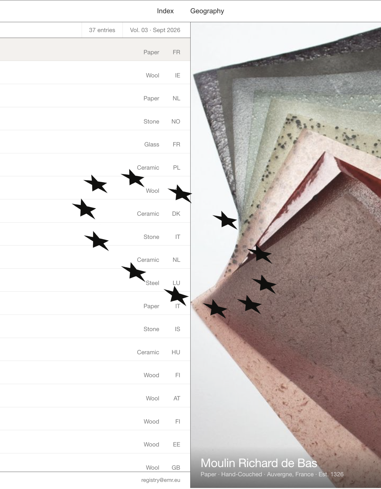
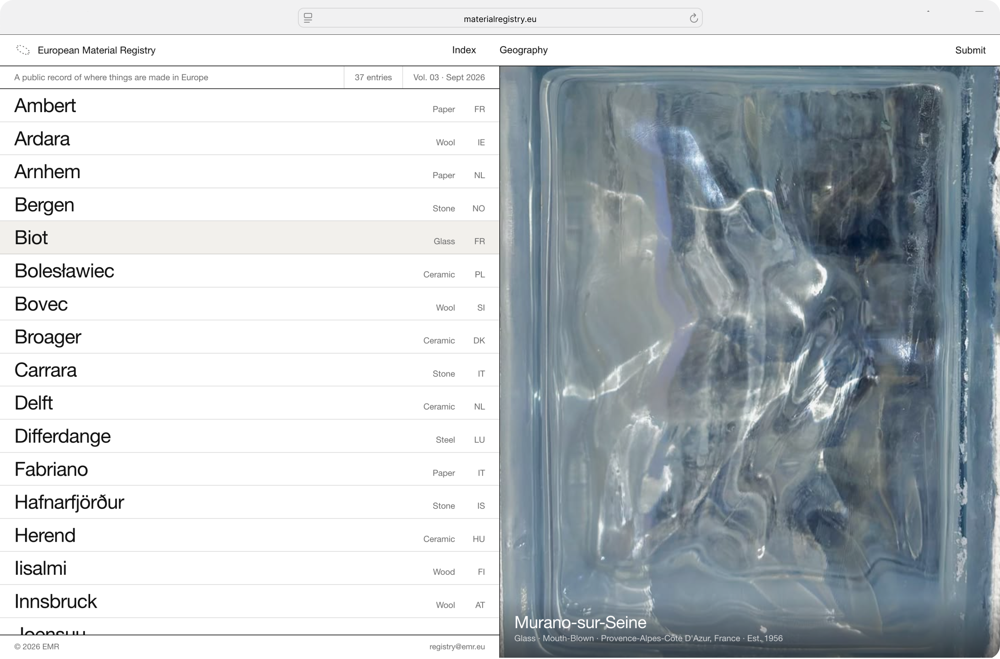
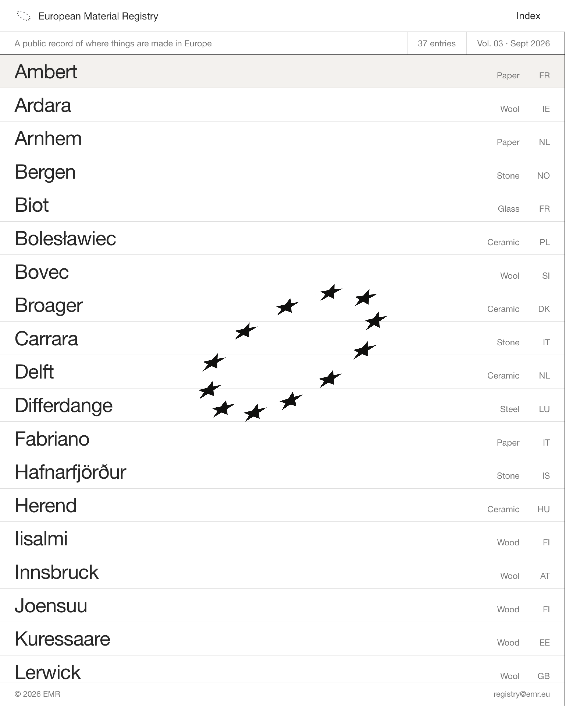
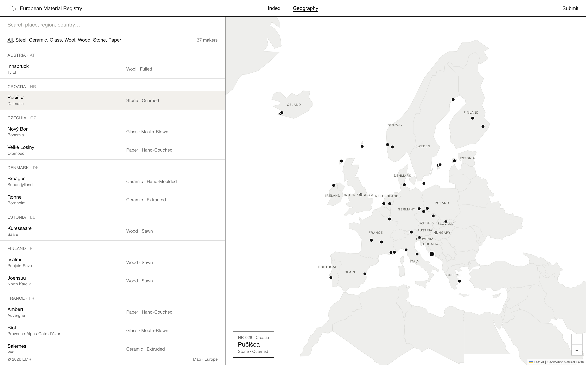
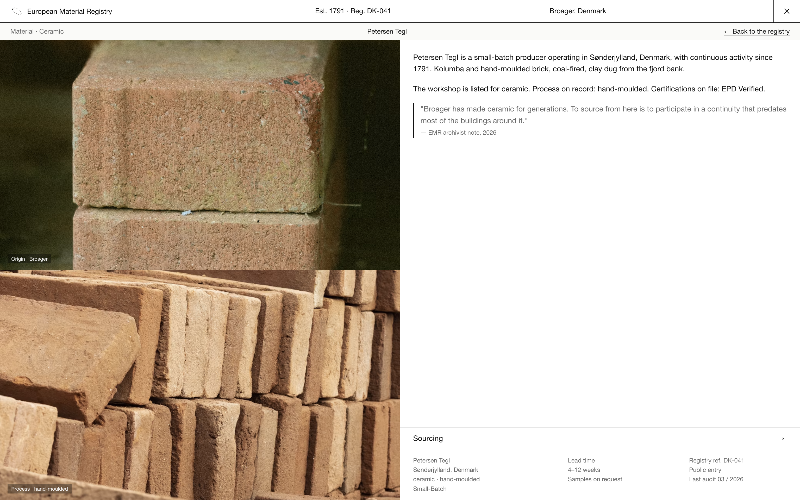
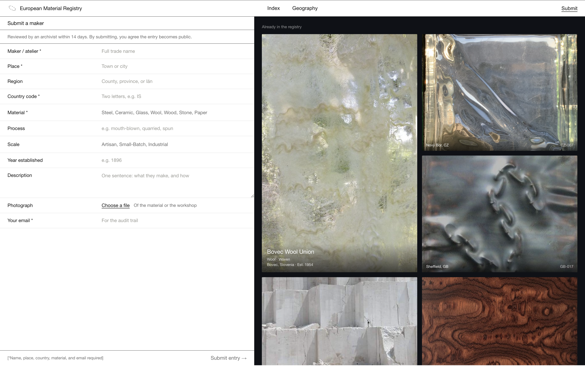

Where do you go if you want to produce something in Europe?

Problem to solve: Knowing a material exists is one thing. Knowing where it is made, who produces it, and how to access it is another.

The EUROPEAN MATERIAL REGISTRY is a speculative public tool that treats this as an information problem worth solving: an open, community-maintained index of quarries, foundries, mills, kilns and workshops—built for architects, product designers, students, and anyone curious about where things are made and where opportunities for production exist.
The project is speculative by design. The places and traditions are real and researched: Nový Bor is a Bohemian glass town, Ambert has milled paper since 1326, and Gotland sheep produce their characteristic silver-grey fleece. Some businesses are real; others are invented names rooted in genuine regional practices. The project proposes a tool that could exist, rather than pretending it already does.

## WHAT THE PROJECT ARGUES

## THE FIRST DIRECTION DIDN'T WORK
I started poster-graphic: halftones, colour-coded rows, type as structure, rave-flyer energy. It looked good as a single screen and failed as a tool.
With thirty rows on screen the decoration was doing the opposite of its job. Colour-coding by material competed with the data instead of organising it, and the density that should have read as authoritative read as loud. A registry has to survive being *used* — scrolled, filtered, scanned for one specific thing, and the poster version only survived being looked at.

## WHAT I'D DO NEXT
This site can't be shown, some sites block for security.
Open in a new tab↗